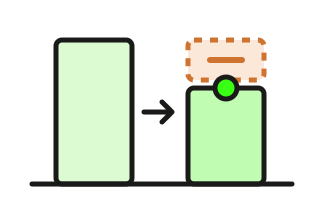

Steuern und Handelskosten: Was von der Rendite bleibt
Zwischen 3,9 % auf dem Kurszettel und dem Geld auf deinem Konto liegen Abgeltungsteuer, Ordergebühr und Geld-Brief-Spanne. Wer sie kennt, holt bei gleicher Anleihe mehr heraus. Lesezeit: etwa 6 Minuten.

Keine Steuerberatung. Regeln für Privatanleger mit Wohnsitz in Deutschland, Stand September 2026.
Die Steuer auf den Zins
Zinsen sind Kapitalerträge: 25 % Abgeltungsteuer plus Solidaritätszuschlag = 26,375 %, mit Kirchensteuer rund 28 %. Ein deutscher Broker zieht sie direkt ab – du siehst nur den Nettobetrag.
Steuerfrei bleiben 1.000 € im Jahr (zusammen veranlagte Paare 2.000 €), der Sparerpauschbetrag. Er wirkt nur mit Freistellungsauftrag beim Broker. Auslandsbroker ohne deutsche Steuerabführung zahlen brutto aus – dann rechnest du in der Anlage KAP selbst ab.
100 € Zins – was ankommt
Faustregel: Zins × 0,74 = netto. Der Freistellungsauftrag nützt am meisten bei dem Broker, bei dem die höchsten Zinserträge anfallen.
Rechner: Zinsen netto nach Steuer →Kurz gesagt: 26,375 % auf jeden Zins-Euro über dem Pauschbetrag. Freistellungsauftrag erteilen – sonst zieht der Broker auch auf die ersten 1.000 € Zinsen Steuer ab, und du bekommst sie erst über die Steuererklärung zurück.
Auch der Kursgewinn wird besteuert
Kaufst du zu 96 und bekommst 100 zurück, sind die 4 Punkte steuerpflichtig wie Zinsen – fällig erst bei Rückzahlung oder Verkauf, nicht Jahr für Jahr. Deine Rendite bis Fälligkeit ist also komplett steuerpflichtig, nicht nur der Kupon.
Umgekehrt gilt es auch: Kaufst du zu 104 und bekommst 100, ist der Verlust ein Kapitalverlust, der andere Kapitalerträge mindert – Zinsen, Dividenden, Aktiengewinne. Der Broker verrechnet ihn automatisch im Verlusttopf; über mehrere Broker hinweg geht das nur mit Verlustbescheinigung in der Steuererklärung.
Unter oder über 100 gekauft
Hoher Kupon über 100 gekauft heißt: hohe Zinsen jetzt versteuern, Verlust erst am Ende gutgeschrieben. Niedriger Kupon unter 100: umgekehrt – steuerlich meist günstiger.
Kurz gesagt: Die ganze Rendite ist steuerpflichtig – der Kursgewinn erst am Ende. Kursverluste aus Käufen über 100 senken die Steuer auf andere Erträge.
Stückzinsen: Steuer verschieben
Kaufst du zwischen zwei Zinsterminen, zahlst du dem Verkäufer die aufgelaufenen Stückzinsen. Steuerlich sind sie negative Einnahmen: Der Broker bucht sie in den Verlusttopf, sie mindern sofort deine steuerpflichtigen Erträge. Den vollen Kupon versteuerst du später.
Das ist kein Geschenk, sondern eine Verschiebung – aber eine nützliche: Kauf im Dezember, Zinstermin im Januar drückt die Steuer im alten Jahr und schiebt den Ertrag ins neue. Wer den Pauschbetrag in einem Jahr nicht ausschöpft, kann ihn so besser nutzen.
Kupon 3 %, Zinstermin 1. Februar, Kauf am 1. Dezember
Die −2,50 wirken im alten Jahr wie ein Verlust, die +3,00 im neuen wie Zinsen. Bei Verkauf zwischen Terminen bekommst du Stückzinsen – dann sind sie steuerpflichtig.
Kurz gesagt: Gezahlte Stückzinsen senken die Steuer sofort, der Kupon kommt später dran. Über den Jahreswechsel ein Hebel für den Pauschbetrag.
Nullkupon und Fremdwährung: zwei Sonderfälle bei der Steuer
Ein Nullkupon zahlt keinen Zins, sondern wird unter 100 gekauft und zu 100 zurückgezahlt. Die Steuer fällt erst am Ende an – bis dahin verzinst sich der volle Betrag, nicht nur der Nettozins. Über zehn Jahre bringt das bei 3 % rund 0,7 % mehr als eine Kuponanleihe. Sinnvoll für Geld mit festem Termin, nicht für laufendes Einkommen.
Bei Fremdwährungsanleihen rechnet das Finanzamt in Euro: Der Wechselkursgewinn zwischen Kauf und Rückzahlung ist Teil des steuerpflichtigen Kursgewinns – ein Verlust mindert entsprechend. Bei der Dollar-Anleihe zu 5 % versteuerst du in Euro also mehr oder weniger als 5 %.
10.000 €, 10 Jahre, 3 %, nach Steuern
Ohne Pauschbetrag gerechnet. Vorsicht: Nullkupons sind selten, oft wenig gehandelt und schwanken stark – Duration = Laufzeit.
Suche: Nullkupon-Anleihen in Euro →Kurz gesagt: Nullkupon = Steuer erst am Ende, Zinseszins auf brutto. Fremdwährung = auch der Wechselkurs wird versteuert.
Handelskosten: die zweite Steuer
Beim Kauf zahlst du zweimal: die Ordergebühr des Brokers (für 5.000 € je nach Anbieter 0 bis rund 18 €, siehe Broker-Vergleich) und die Geld-Brief-Spanne der Börse – bei Bundesanleihen 0,05 %, bei kleinen Unternehmensanleihen auch 1 % und mehr. Beim Kauf zahlst du die halbe Spanne, denn der Briefkurs liegt so weit über der Mitte. Bei 5.000 € und 0,6 % Spanne sind 10 € Gebühr plus 0,3 % halbe Spanne (15 €) zusammen 25 €, also 0,5 %.
Entscheidend ist die Haltedauer: Einmalkosten verteilen sich auf die Jahre. Bei einem Jahr fressen die 0,5 % ein Achtel der Rendite, bei zehn Jahren fast nichts. Immer mit Limit ordern und den Handelsplatz mit der engsten Spanne wählen – das spart oft mehr als die Brokerwahl.
25 € Einmalkosten auf 5.000 €, je Jahr Haltedauer
Nur Kaufkosten; wer bis zur Fälligkeit hält, zahlt beim Verkauf nichts. Bei 20.000 € statt 5.000 € wiegt die feste Gebühr ein Viertel so viel.
Broker im Vergleich: Kosten je Kauf →Kurz gesagt: Gebühr plus Spanne sind Einmalkosten – kurze Haltedauer macht sie teuer. Limit setzen, Spannen vergleichen, bis zur Fälligkeit halten.
Stückelung: Was du überhaupt kaufen kannst
Die Stückelung ist der kleinste handelbare Betrag. Fast die Hälfte der Euro-Unternehmensanleihen ist nur in 100.000-€-Stücken zu haben – die Emittenten sparen sich so den Prospekt für Privatanleger. Staatsanleihen sind fast alle ab 1.000 € oder sogar 0,01 € (Bund) erhältlich.
Für dich heißt das: Die schöne Rendite auf dem Kurszettel gibt es oft nur ab 100.000 € – oder gar nicht. Filtere in der Suche nach Mindestanlage, oder sieh dir für diese Segmente einen Anleihen-ETF an, der die großen Stücke bündelt.
Euro-Unternehmensanleihen nach Stückelung
Rund 21.700 Euro-Unternehmensanleihen im Register der Anleihen-Suche, Stand 26.09.2026. Euro-Staatsanleihen: 83 % bis 1.000 €.
Suche: Unternehmensanleihen ab 1.000 € →Kurz gesagt: Erst die Stückelung prüfen, dann die Rendite bewundern. Die Hälfte der Unternehmensanleihen beginnt bei 100.000 €.
Allgemeine Information zu Steuern und Kosten, Stand September 2026, für Privatanleger mit Wohnsitz in Deutschland. Keine Steuer- und keine Anlageberatung – im Einzelfall hilft ein Steuerberater. Die Zahlen sind gerundet.
Datenquellen und Methodik
Steuern (Stand September 2026). Kapitalerträge nach § 20 EStG: Zinsen, Stückzinsen und Veräußerungs- bzw. Einlösungsgewinne von Anleihen; Abgeltungsteuer 25 % (§ 32d EStG) plus Solidaritätszuschlag 5,5 % = 26,375 %, mit Kirchensteuer 8 % 27,82 %, 9 % 27,99 %. Sparerpauschbetrag 1.000 € / 2.000 € (§ 20 Abs. 9 EStG). Gezahlte Stückzinsen sind negative Einnahmen im allgemeinen Verlusttopf; Verluste aus Anleihen sind mit allen Kapitalerträgen verrechenbar (Aktienverluste dagegen nur mit Aktiengewinnen). Fremdwährung: Anschaffung und Rückzahlung werden zum jeweiligen Euro-Kurs bewertet, die Differenz ist Teil des Gewinns oder Verlusts. Günstigerprüfung, Kirchensteuer-Abzugsverfahren und Besonderheiten (Altbestände vor 2009, Verlustbescheinigung, Auslandsbroker) sind vereinfacht dargestellt. Allgemeine Information, keine Steuerberatung.
Rechnungen. Netto = brutto × (1 − 0,26375). Nullkupon (Karte 4): 10.000 € × 1,03¹⁰ = 13.439 €, Steuer 26,375 % auf 3.439 € Gewinn = 907 €, netto 12.532 €; Kuponanleihe: 10.000 € × (1 + 0,03 × 0,73625)¹⁰ = 12.442 €, ohne Pauschbetrag und Kosten. Handelskosten (Karte 5): 10 € Ordergebühr + 0,3 % halbe Spanne (Spanne 0,6 %) auf 5.000 € = 15 €, zusammen 25 € = 0,5 %, geteilt durch die Haltedauer in Jahren.
Stückelung (Karte 6). Auswertung des Registers der Anleihen-Suche (ESMA FIRDS, Stand 26.09.2026): 21.658 Unternehmensanleihen in Euro, davon 21.657 mit Angabe zur Stückelung: 8.055 bis 1.000 € (37 %), 3.012 zwischen 1.001 und 99.999 € (14 %), 10.590 ab 100.000 € (49 %); 1.175 Euro-Staatsanleihen, davon 975 bis 1.000 € (83 %, 9 ohne Angabe).